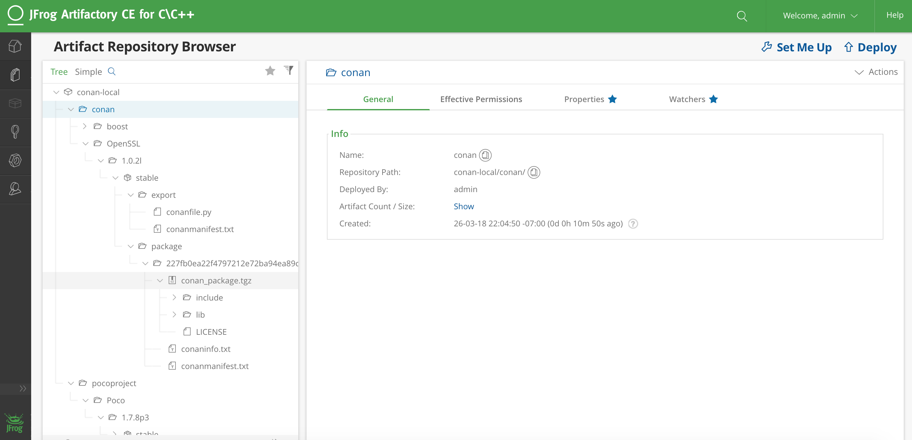

上传包
这一节一起来看看如何将包上传到指定的远端包仓库。
远端仓库
在前面我们创建的包都是存在本地缓存中，一般在~/.conan/data。现在我们想将它们上传到Conan Server上，以便可以在别的机器和项目上使用它们。
Conan的包可以被上传到提前配置好名字和URL的不同远端仓上。这些远端仓是用来存储包的二进制的服务器。
有好几种的远端仓。对于私有开发有以下选择：
Artifactory Community Edition for C/C++ ： 它是一个完全免费的Conan服务端仓库，推荐公司或者团队使用它作为自己的私有仓库。它有一个web UI，先进的鉴权和权限管理，较好的性能和扩展性，对应的REST API，以及能够作为服务器存储交付件（如tar包，Zip文件等）。
Artifactory Pro：Artifactory Pro可以管理所有主要包格式的二进制仓库。它是推荐给企业的更专业的包管理仓库。具体可以在Artifactory documentation了解更多。
Conan server：简单免费开源的、MIT license的服务端，和conan客户端一起发布。
对于包的分发，可以使用Bintray。 Bintray是一个云平台，可以让你对发布、存储、分发软件具有完全的控制。您可以在Bintray中创建二进制存储库来共享Conan包，甚至创建一个组织。它对于开源软件包是免费的，并免费提供分发到C和C++社区的推荐服务器。
Conan-center
Conan-center(https://bintray.com/conan/conan-center)是主要的官方仓库，提供服务给开源的Conan包。它是本地的默认远端仓配置，如下也可以手动将其添加到配置：`conan remote add conan-center https://conan.bintray.com`。
在Conan-center中当前有两种不同类型的包：
完全引用的包： 例如"pkg/version@user/channel"。这种包是用户在自己的Bintray仓库中创建的，然后包含在这里。现在不推荐继续使用这种包的分发方式了。
没有
user/channel的包：能够直接以pkg/version方式使用的包，这种包是通过Conan的C3I(Conan-Center Continuous Integration)服务自动根据conan-center-index从github上创建出来的。
Bintray的社区仓库
有几个很流行的社区仓库，它们也提供conan用户下载自己感兴趣的包。这些仓库并不属于conan团队。
- Bincrafters ： https://bintray.com/bincrafters/public-conan
Bincrafters团队构建了许多二进制软件包给OSS社区。这个仓库包含了大量的Conan包。
如下命令可以将这个仓库添加到Conan中：
$ conan remote add bincrafters https://api.bintray.com/conan/bincrafters/public-conan
- Conan Community: https://bintray.com/conan-community/conan
这是conan开发者组织的，用于将包发布于Conan Center前测试和孵化包的。这个仓库包含一些成熟过程中的包，可能还不能工作或者特性不齐全。
如下命令将这个仓库添加到Conan中：
$ conan remote add conan-community https://api.bintray.com/conan/conan-community/conan
将包上传到远端库
首先可以列出目前配置的远端库：
$ conan remote list
如下可以将任意的远端库添加到你的机器上：
$ conan remote add my_local_server http://localhost:9300
可以搜索远端库：
$ conan search -r=my_local_server
现在，上传包配置以及所有生成的二进制包到远端。本例中，我们使用my_local_server表示指定的远端库，你可以换成其它的：
$ conan upload Hello/0.1@demo/testing --all -r=my_local_server
上述命令可能会弹出要求输入用户名和密码。默认的Conan sever有一个demo/demo账户供我们测试。
--all选项指示上传包配置以及所有的二进制。忽略--all选项将会只上传包的配置文件。可以控制上传的二进制，--package允许显示指定上传的包的package ID；--query可以指定query参数，例如arch=armv8 and os=Linux，则会上传所有匹配的二进制包。在shell中如下调用：conan upload <package> -q 'arch=x86_64 and os=Linux' ...。
这时就可以在自己机器或者局域网中其它机器上查找到这个包了：
$ conan search Hello/0.1@demo/testing -r=my_local_server
如果上传包失败，可以再次尝试。Conan会记录住当前上传进度以及只上传缺失的文件。
现在我们可以检查是否可以下载并使用上传的包。我们首先把本地的包删掉，否则就不会从远端下载。
$ conan remove "Hello*"
$ conan search
我们可以复用之前Hello包里的测试工程，而指定不将Hello包构建及导出。
$ conan create . demo/testing --not-export --build=never
这时我们会看到conan从本地server上下载对应的二进制包。
使用Bintray
在Bintray上，你可以创建和管理许多的个人免费的Conan仓库。对于一个OSS账户，所有你上传的包都是公开的，其他人可以简单的将你的仓库添加到他们的Conan远端仓，然后使用你发布的包。
为了能够让团队在开源工程上协作，你可以在Bintray上创建组织，然后加入成员。这样你们就可以共同创建和编辑你们组织仓库内的包了。
上传包至Bintray
在Bintray上创建一个开源账户。打开https://bintray.com/signup/oss，提交表单创建账户;
创建conan仓库。在你的账户下创建一个conan仓库，如果你的仓库需要和别人协作，则需要先创建一个组织（organization）;
将创建的conan仓库添加到本地配置中：
conan remote add <REMOTE> <YOUR_BINTRAY_REPO_URL>; 库的URL地址在页面中点击“set me up”按钮可以看到；获得你的API key：你的API key是Bintray认证conan客户端的密码，不是你登录Bintray的密码。在Bintray上点击
Edit Your Profile，然后在你的账户配置中获取你的API key；设置你的证书，增加Conan用户，使用API key，你的远端库和Bintray的用户名：
conan user -p <APIKEY> -r <REMOTE> <USERNAME>;
设置成功后，你的Conan客户端将会按照以下顺序从远端仓解析以及下载安装包：
- conan-center
- 你自己的仓库
如果想要将自己的仓库放在前面，可以在添加仓库时使用--insert命令行参数：
$ conan remote add <your_remote> <your_url> --insert 0
$ conan remote list
<your remote>: <your_url> [Verify SSL: True]
conan-center: https://conan.bintray.com [Verify SSL: True]
贡献包到Conan-center
对Conan-center贡献包，可以直接通过向https://github.com/conan-io/conan-center-index提交pull request。C3I（Conan-center Continuous Integration）服务将会自动从合并后的pull request构建二进制包，并上传能到Conan-center。具体的操作见github上的https://github.com/conan-io/conan-center-index/wiki。
Artifactory Community Edition
C/C++的Artifactory Community Edition(CE)社区版本，推荐给想要做包的私有存储的团队或公司使用。社区版是完全免费的，它包含Web UI、鉴权与权限管理，很好的心梗与扩展性、REST API、一个命令行工具、以及能够存储任何源码和二进制的仓库。
本节简单介绍下的Artifactory CE，更详细的推荐查看Artifactory的文档。
运行 Artifactory CE
有好几种下载和运行Artifactory CE的方法。最简单的是下载zip包，解压后安装。压缩包里面还包含了一个Docker Image，也可以从docker启动。

一旦运行起来，访问“http://localhost:8081”，使用默认用户名密码：`admin:password`登录。
创建和使用Conan仓库
从页面导航到Admin -> Repositories -> Local，然后点击"New"，再出现的对话框中选Conan，输入Repository Key，为创建的仓库起个名字。你可以根据需要按照不同的工作流、团队或者工程创建多个仓库。
然后就需要配置客户端了。在仓库页面点击"Set Me Up"拷贝正确的远端库的地址，然后配置Conan客户端：
$ conan remote add artifactory http://localhost:8081/artifactory/api/conan/conan-local
现在你可以往仓库中上传、下载或者查询包了。
$ conan upload "*" --all -r=artifactory
$ conan search "*" -r=artifactory
从其它服务端迁移包
如果你有了自己的包服务仓库，可能需要从别的仓库（例如Conan-center）把包迁移过来。包的迁移并不复杂，只用使用Conan客户端将包下载下来，然后重新上传到新的服务器上即可。
有个Python脚本会更高效一些。下例中我们分别用'local'和'artifactory'表示两个仓库：
import os
import subprocess
def run(cmd):
ret = os.system(cmd)
if ret != 0:
raise Exception("Command failed: %s" % cmd)
# Assuming local = conan_server and artifactory remotes
output = subprocess.check_output("conan search -r=local --raw")
packages = output.splitlines()
for package in packages:
print("Downloading %s" % package)
run("conan download %s -r=local" % package)
run("conan upload \"*\" --all --confirm -r=artifactory")
使用conan_server
conan_server是免费开源版本的Conan远端库实现。它是一个简单的应用程序，和Conan的客户端一起绑定安装。conan_server仅建议用来测试，或者对小团队使用。大多数场合下更推荐使用免费的Artifactory Community Edition搭建私有的包仓库。
如果已经下载安装过Conan本地程序了的话，那么运行conan_server仅需要一行命令：conan_server。
从源码运行 (linux)
从源码运行conan_server，可以用WSGI（例如gunicorn）启动它，这样会更加的稳定。
$ git clone https://github.com/conan-io/conan.git
$ cd conan
$ git checkout master
$ pip install -r conans/requirements.txt
$ pip install -r conans/requirements_server.txt
$ pip install gunicorn
下载好源码后，如下将其启动在9300端口：
$ gunicorn -b 0.0.0.0:9300 -w 4 -t 300 conans.server.server_launcher:app
服务配置
可以在~/.conan_server/server.conf中对服务进行配置，配置好后重新启动服务load新的配置。
[server]
jwt_secret: MnpuzsExftskYGOMgaTYDKfw
jwt_expire_minutes: 120
ssl_enabled: False
port: 9300
public_port:
host_name: localhost
store_adapter: disk
authorize_timeout: 1800
# Just for disk storage adapter
disk_storage_path: ~/.conan_server/data
disk_authorize_timeout: 1800
updown_secret: NyiSWNWnwumTVpGpoANuyyhR
[write_permissions]
# "opencv/2.3.4@lasote/testing": default_user,default_user2
[read_permissions]
# opencv/1.2.3@lasote/testing: default_user default_user2
# By default all users can read all blocks
*/*@*/*: *
[users]
demo: demo
关于配置的含义，以及如何将conan_server配置在Nginx中，请参考具体的配置文档。